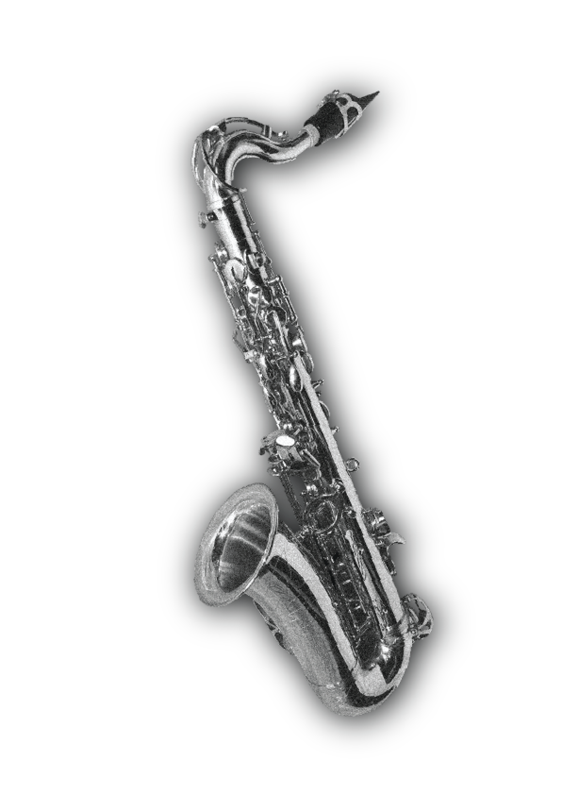
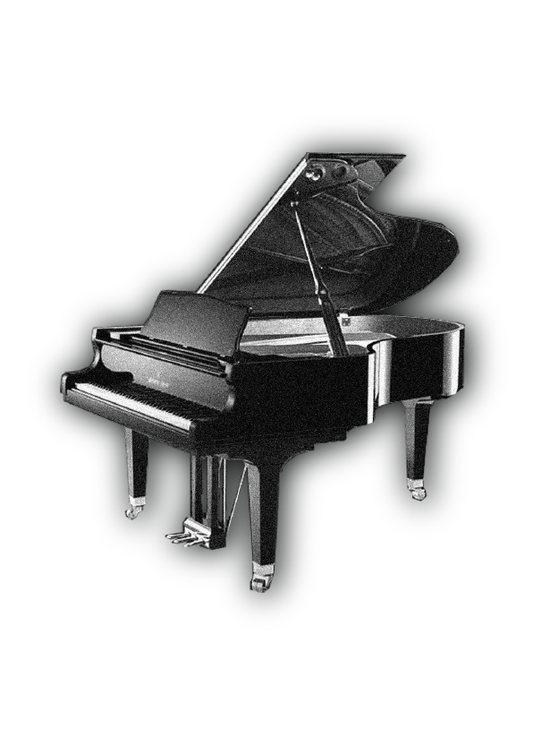

เครื่องดนตรี
ทรงเล่น




Trumpet
พระองค์สนพระทัยแตรตั้งแต่ก่อนเริ่มเรียนแซกโซโฟนได้เสด็จพระราชดําเนินไปที่ภูเขาได้ทอดพระเนตรวงดนตรีที่เขาเล่นที่โรงแรมก็โปรดและมีพระราชประสงค์จะทรงแตรแต่สมเด็จย่าไม่ทรงเห็นด้วยเพราะการเป่าแตรต้องใช้กาลังมากอาจเป็นอันตรายแก่สุขภาพได้จึงทรงผ่อนผันให้เล่นแซกโซโฟนแทนต่อมาพระองค์จึงไปเช่าแตรมาเล่นครั้งแรกที่เช่ามาเป็นแตรคอร์เนตอีกหลายปีจึงทรงซื้อแตรทรัมเปตเครื่องแรกเองเป็นแตรยี่ห้อ "เชสเมอร์" ของฝรั่งเศสแต่ภายหลังเครื่องนี้พระราชทานองสุนทราภรณ์ไปต่อมาจึงซื้อใหม่ยี่ห้อเซลเมอร์เหมือนกันครูเวย์เบรชท์ที่เป็นครูสอนดนตรีบอกว่าแตรดีที่สุดคือยี่ห้อกูร์ตัวแต่ไม่ได้ทรงซื้อเพิ่งซื้อเมื่อปี พ.ศ. 2529 นี่เอง
Saxophone
ภาพของในหลวงรัชกาลที่ 9 ทรงเป่าแซกโซโฟนคงเป็นภาพคุ้นตาของหลายคนซึ่งก็พอจะทําให้เดาได้ไม่ยากว่า “แซกโซโฟน”เป็นเครื่องดนตรีที่พระองค์ทรงโปรดที่สุด ในหลวงรัชการที่ 9 เรียนแซกโซโฟนแทนเมื่อพระชนมายุย่างเข้า ๑๔ พรรษา แซกโซโฟนตัว แรกของพระองค์เป็นของมือสอง ราคา 300 ฟรังค์ ที่ร่วมหุ้นกับพระเชษฐาครึ่งหนึ่งอีกครึ่งหนึ่งมาจากสมเด็จย่าพระองค์ทรงฝึกแซกโซโฟนไปพร้อมๆกับเริ่มฝึกดนตรีแจ๊สโดยทรงหัดเป่าแซกโซโฟนสอดแทรกกับแผ่นเสียง ของนักดนตรีที่มีชื่อเสียงอย่าง Johnny Hodges และ Sidney Berchet ได้เป็นอย่างดีและทรงโปรดดนตรี ประเภท Dixieland Jazz เป็นอย่างมาก
Piano
พระองค์ได้เริ่มทรงเปียโนเมื่อเสด็จเถลิงถวัลยราชสมบัติแล้วเพื่อใช้ในการพระราชนิพนธ์เพลงและเพื่อร่วมกับวงดนตรีเป็นการส่วนพระองค์สําหรับเปียโนนั้นพระองค์ไม่เคยทรงเรียนจริงจังจากใคร แต่ทรงเล่นเอาเองดูโน้ตและทรงเรียนรู้ประสานเสียงเอง 'Carl Hardt Stutgart' เป็นเปียโนตัวแรกที่ในหลวงรัชกาลที่ 9 ทรงเล่นตั้งแต่สมัยที่ประทับอยู่เมืองโลซานน์สวิตเซอร์แลนซึ่งเป็นเปียโนที่สมเด็จพระศรีนครินทราบรมราช ชนนีทรงเช่าให้พระราชธิดาและพระราชโอรสทั้ง 3 พระองค์เมื่อครั้งทรงพระเยาว์ซึ่งเป็นตัวเดียวกับที่เรามักจะเห็นในพระบรมฉายาลักษณ์ที่พระองค์ทรงเปียโนโดยที่มีแมวทรงเลี้ยงชื่อ "โด้" นั่งเฝ้าอยู่ไม่ส่ง
Accordian
ในหลวงรัชกาลที่ 9 ทรงเริ่มเล่นดนตรีตั้งแต่พระชนมายุ 13 พรรษาขณะที่ประทับอยู่ที่ประเทศสวิตเซอร์แลนด์โดยเครื่องดนตรีแรกที่ทรงเรียนก็คือ แอคคอร์เดียนหรือหีบเพลง แต่พระองค์ไม่ทรงติดต่อมาจึงได้เลิกเล่นไป
Clarinet
สําหรับคลาริเบตนับครั้งแรกทรงเอาของพระบาทสมเด็จพระเจ้าอยู่หัวอานันทมหิดลมาทรงเป่าและครูเวย์บรูชท์ก็ได้ให้คําแนะบ้าอยู่สองครั้งสามครั้งหลังจากนั้นพระองค์ก็ทรงเล่นเองไม่ได้ไป เรียนที่ไหนอีกคาริเนตที่ทรงใช้ตัวแรกยี่ห้อ ‘เลอบลองค์’
Guitar
เราอาจจะไม่ค่อยได้เห็นพระองค์ทรงกีตาร์บ่อยนักแต่เป็นอีกเครื่องดนตรีที่พระองค์ทรงเล่นได้ไพเราะเป็นอย่างมากพระองค์ทรงที่ตาร์ครั้งแรกเมื่อพระชนมายุราว 16 พรรษาได้ยืมมาจาก เพื่อนรุ่นพี่ที่โรงเรียนภายหลังเอาไปคืนแต่เขาเห็นว่าพระองค์สนพระทัยในการ์จึงมอบกีตาร์ให้เลยและที่สําคัญที่ตาร์ถือเป็นเครื่องดนตรีชิ้นสําคัญที่พระองค์ทรงเพื่อใช้ในการพระราชนิพนธ์เพลงเพราะๆที่พวกเราได้ยินได้ฟังกันอยู่ทุกวันนี้